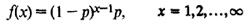
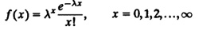
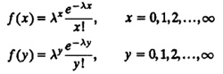
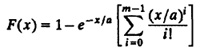
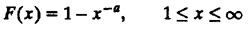

Often it is found in a normal quantile-quantile plot that the data follows a straight line but departs from it at one or both ends. This is an indication of data having shorter or longer tails than the normal distribution. For example, Figure 12.6b shows data that has longer tails at both ends. An S-shaped normal quantile-quantile plot, such as the one shown in Figure 12.6c, indicates that the observations have a distribution that is more peaky and has shorter tails than a normal distribution. If the distribution is asymmetric so that it has a shorter tail on one end and a longer tail on the other, this will show up on the normal quantile-quantile plot as a combination of the two types of departures from normality just discussed. An example of asymmetric plot is shown in Figure 12.6d.

FIGURE 12.6 Interpretation of normal quantile-quantile plots.
EXERCISES
- 12.1 A distributed system has three file servers, which are chosen independently and with equal probabilities whenever a new file is created. The servers are named A, B, and C. Determine the probabilities of the following events:
- a. Server A is selected
- b. Server A or B is selected
- c. Servers A and B are selected
- d. Server A is not selected
- e. Server A is selected twice in a row
- f. Server selection sequence ABCABCABC is observed (in nine successive file creations)
- 12.2 The traffic arriving at a network gateway is bursty. The burst size x is geometrically distributed with the following pmf.

Compute the mean, variance, standard deviation, and coefficient of variation of the burst size. Plot the pmf and CDF for P = 0.2.
- 12.3 The number of I/O requests received at a disk during a unit interval follows a Poisson distribution with the following mass function:

Here, λ is a parameter. Determine the mean, variance, and coefficient of variation of the number. Plot the pmf and CDF for λ = 8.
- 12.4 Two Poisson streams (see Exercise 12.3) merge at a disk. The pmf for the two streams are as follows:

Determine the following:
- a. Mean of x + y
- b. Variance of x + y
- c. Mean of x - y
- d. Variance of x - y
- e. Mean of 3x - 4y
- f. Coefficent of variation of 3x - 4y
- 12.5 The response time of a computer system has an Erlang distribution with the following CDF:

Find expressions for the pdf, mean, variance, mode, and coefficient of variation of the response time.
- 12.6 The CDF of a Pareto variate is given by

Find its pdf, mean, variance, mode, and coefficient of variation.
- 12.7 The execution times of queries on a database is normally distributed with a mean of 5 seconds and a standard deviation of 1 second. Determine the following:
- a. What is the probability of the execution time being more than 8 seconds?
- b. What is the probability of the execution time being less than 6 seconds?
- c. What percentage of responses will take between 4 and 7 seconds?
- d. What is the 95-percentile execution time?
- 12.8 What index of central tendency should be used to report
- a. Response time (symmetrical pdf)
- b. Number of packets per day (symmetrical pdf)
- c. Number of packets per second (skewed pdf)
- d. Frequency of keywords in a language
- 12.9 How would you summarize an average personal computer configuration:
- a. CPU type
- b. Memory size
- c. Disk type
- d. Number of peripherals
- e. Cost
- 12.10 The CPU times in milliseconds for 11 workloads on a processor are 0.74, 0.43, 0.24, 2.24, 262.08, 8960, 4720, 19740, 7360, 22,440, and 28,560. Which index of central tendency would you choose and why?
- 12.11 The number of disk I/O’s performed by a number of programs were measured as follows: {23, 33, 14, 15, 42, 28, 33, 45, 23, 34, 39, 21, 36, 23, 34, 36, 25, 9, 11, 19, 35, 24, 31, 29, 16, 23, 34, 24, 38, 15, 13, 35, 28}. Which index of central tendency would you choose and why?
- 12.12 Choose a performance analysis problem. List all system performance metrics and workload parameters. For each metric/parameter discuss the following:
- a. Which index of central tendency would you use?
- b. Which index of dispersion would you use?
Assume appropriate distributions, if necessary, and justify your assumptions. Include at least one example of each of the possible indices: mean, median, mode, geometric mean, range, variance, and percentiles. (This may require you to extend the problem or parameter list.)
- 12.13 For the data of Exercise 12.10, which index of dispersion would you choose and why?
- 12.14 For the data of Exercise 12.11, compute all possible indices of dispersion. Which index would you choose and why?
- 12.15 Plot a normal quantile-quantile plot for the following sample of errors:
| -0.04444
| -0.04439
| -0.04165
| -0.03268
| -0.03235
| -0.03182
| 0.02771
| 0.02650
|
| -0.02569
| -0.02358
| 0.02330
| 0.02305
| 0.02213
| 0.02128
| 0.01793
| 0.01668
|
| -0.01565
| -0.01509
| 0.01432
| 0.00978
| 0.00889
| 0.00687
| 0.00543
| 0.00084
|
| -0.00083
| -0.00048
| 0.00024
| 0.00079
| 0.00082
| 0.00106
| 0.00110
| 0.00132
|
| 0.00162
| 0.00181
| 0.00280
| 0.00379
| 0.00411
| 0.00424
| 0.00553
| 0.00865
|
| 0.01026
| 0.01085
| 0.01440
| 0.01562
| 0.01975
| 0.01996
| 0.02016
| 0.02078
|
| 0.02134
| 0.02252
| 0.02414
| 0.02568
| 0.02682
| 0.02855
| 0.02889
| 0.03072
|
| 0.03259
| 0.03754
| 0.04263
| 0.04276
|
|
|
|
|
Are the errors normally distributed?
)
){kind=link}